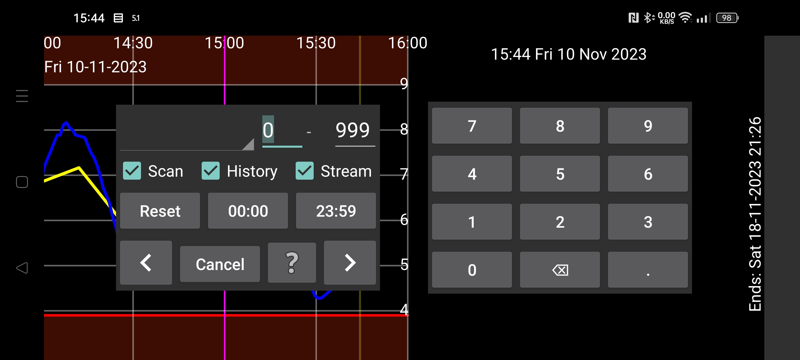

ar be de es fr hi it ja nl pl pt ru tr uk uz zh en
Поиск используется для нахождения значений глюкозы и введенных записей.
Поиск выполняется между заданными числами. Например, 10–999 ищет значения между 10 и 999.
Значения глюкозы разделены на Сканы, История и Поток.
Скан: значение, показанное сразу после сканирования. Поиск сырых сканов.
История: поиск сырых исторических значений. Это периодические измерения, сохраненные на датчике и переданные в приложение. Датчики FreeStyle Libre 2 сохраняют значение каждые 15 минут и передают их в приложение через NFC. Датчики FreeStyle Libre 3 сохраняют значение каждые 5 минут и передают их через Bluetooth.
История Калиб.: поиск калиброванных исторических значений.
Поток: поиск сырых потоковых значений — периодических измерений каждую минуту, отправляемых датчиком FreeStyle Libre 2 в приложение по Bluetooth.
Поток Калиб.: поиск калиброванных потоковых значений.
Если вы вводили инсулин, еду или активность, их можно искать, выбрав соответствующую метку в списке и указав интересующий диапазон чисел, например езду на велосипеде между 50 и 100.
Можно также указать интересующее время суток. Если интересуют гипо между 22:00 и 07:00, нажмите первый индикатор времени (при запуске 00:00) и измените его на 22:00, а второй индикатор времени — на 07:00. Также нужно выбрать Поток и/или История и указать диапазон значений от 0 до 3.9 mmol/L (70 mg/dL).
Касание стрелки начинает поиск в выбранном направлении.
Сброс возвращает все значения поиска к исходным.
В Настройки, в разделе меток чисел, можно выбрать, какая метка, например Угл., связана с приемами пищи. Если выбрать эту метку в Новая запись, появляется кнопка Еда. После касания можно ввести прием пищи из ингредиентов. Если выбрать эту метку здесь в списке, вверху экрана появляется поле, где можно указать ингредиент для поиска и, при необходимости, минимальное количество этого ингредиента.